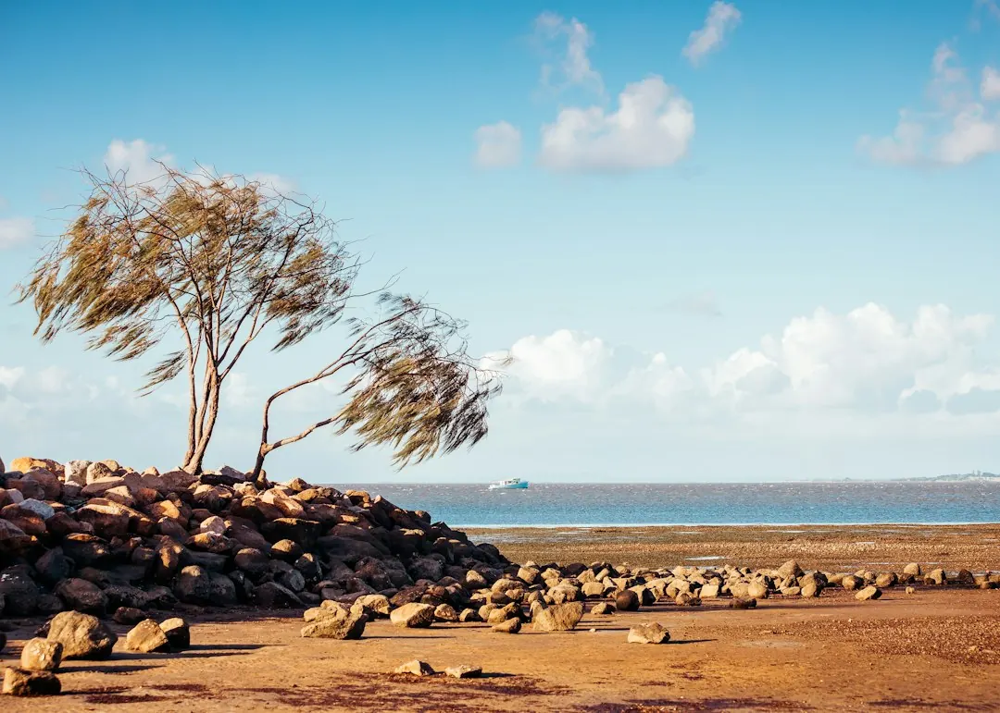

For a retaining wall in Brisbane, the approval pathway can change when the wall plus retained fill or cut exceeds 1 metre, carries surcharge loading, sits within 1.5 metres of a building or another retaining wall, or forms part of a pool fence. Before requesting a price, record the wall height, retained soil, material, access, nearby structures, water movement and discharge route. Those details help separate a straightforward quote from an engineered, repair or replacement assessment.
For homeowners comparing retaining wall contractors brisbane options, the practical decision is whether the site needs a routine quote, drainage diagnosis, repair plan or engineered approval pathway.
Retaining Wall Contractors Brisbane Explained
The published Brisbane Retaining Walls guide recommends describing the suburb, wall height, material, access and drainage signs before a contractor reviews the likely pathway. Add what sits above and below the wall, including a driveway, house pad, pool, shed, fence or neighbouring level. A clear description is more useful than choosing a finish first.
Brisbane blocks can shift from a simple garden edge to a more involved project when a wall supports cut-and-fill ground, a steep side path or a route affected by stormwater. Note where water runs, whether soil is wet, and how materials could be carried or unloaded. Those observations help identify whether the first conversation should concern drainage, excavation, a repair-versus-replacement decision or an engineered wall.
- Record height from the lower ground to the retained level.
- Describe the existing or preferred material.
- Identify nearby buildings, pools, driveways, fences and other walls.
- Note leaning, bulging, blocked weep holes, wet soil or washed-out backfill.
Match the wall system to the site
Material selection should follow the site problem rather than a catalogue preference. Steel-post concrete sleepers suit blocks where long service life, tidy lines and planned drainage are priorities. H4 treated timber sleepers may suit low-height garden edges, older yards and cost-sensitive replacements, but the posts, base and backfill still need assessment.
Core-filled besser blocks can support rendered finishes, tight boundaries and structural applications where certification is carefully considered. Rock and boulder walls can suit sloping sites when batter, drainage and stone selection are resolved. Gabions create a heavy textured face and can suit free-draining terraces or garden edges. A responding contractor should confirm material, design, access, drainage, price and availability in writing for the exact site.
Drainage and movement change the quote
A leaning or bowed wall is not automatically a board-replacement job. The assessment should distinguish movement in the sleepers, posts or retained ground, then consider the surrounding bays, excavation sequence and any temporary support needed before material is removed. Persistent wet backfill, blocked weep holes and washed-out soil are useful questions for the site inspection.
Drainage planning may involve an agi pipe, gravel, geofabric and an outlet route, depending on the wall and ground. Ask where subsoil water will discharge and how the proposed system connects with existing levels. For a timber wall, ask whether deterioration is isolated to one base sleeper or extends into the posts and retained ground. A local repair may be possible where supports remain sound, while widespread decay or failed drainage may point to replacement.
For additional context on repair decisions, readers can compare this guide with the Brisbane retaining wall repairs guide.
Check approval conditions before work begins
Height is only one part of the approval test described in the published guidance. Building approval is not required only when all listed conditions fit: the wall plus retained fill or cut is no more than 1 metre, there is no surcharge loading, the wall is at least 1.5 metres from a building or another retaining wall, and it is not part of a pool fence. If one condition does not fit, ask whether a private certifier, RPEQ engineer or contractor needs to explain the next pathway.
Use the site facts to frame that conversation. Is a driveway, house, pool, shed or another wall above it? Is the wall close to a building or another retaining wall? Does it form part of a pool barrier? Where will water legally discharge? Questions about the Queensland Development Code, Brisbane City Council requirements, filling and excavation, and any building or planning approval should be answered for the specific property rather than assumed from wall height alone.
Request a quote that can be compared
Good quote inputs are practical and site-specific. Send the suburb, wall height, material idea, access notes, nearby structures and visible movement or drainage signs. Photos can be supplied later if requested. Ask each responding contractor to state the proposed wall type, drainage approach, access assumptions, removal or excavation work, approval or certification responsibilities, price basis and availability.
Keep repair and replacement options separate when the existing wall is failing. For a new wall, ask how retained soil, surcharge and discharge affect design. For a replacement, ask what happens to the old material, how the retained ground is controlled during the work and whether the posts, base and backfill are included. Written answers make quotes easier to compare without treating a headline material price as the whole project.
- Describe the wall. Record height, material, suburb, access, retained soil and nearby structures.
- Check movement and water. Note leaning, bulging, wet soil, blocked weep holes and washed-out backfill.
- Ask about approvals. Test the one-metre, surcharge, separation and pool-fence conditions for the property.
- Compare written scopes. Request clear inclusions for drainage, excavation, removal, certification, price and availability.
| Site situation | Likely conversation | Information to prepare |
|---|---|---|
| Low garden edge with sound supports | Routine quote or limited repair assessment | Height, material, access and visible drainage signs |
| Leaning, bowed or wet wall | Drainage diagnosis and repair-versus-replacement review | Movement pattern, blocked weep holes, wet soil and backfill condition |
| Nearby structure, pool, driveway or surcharge | Approval-aware design or engineering discussion | Distances, retained level, loading above and discharge route |
Common questions
What information should I provide before requesting a quote? Provide the suburb, wall height, material idea, access notes, nearby structures and any movement or drainage signs. Photos can be provided later if requested.
Does a wall under one metre automatically avoid approval? No. The published guidance lists additional conditions covering surcharge, separation from buildings or other walls, and pool-fence use. All listed conditions need to fit.
How should a bowing sleeper wall be assessed? First establish whether the sleepers, posts or retained ground are moving. The surrounding bays, drainage and any excavation or temporary support should be considered before removing material.
When might a timber wall need replacement? A local repair may be possible where deterioration is limited and supports remain sound. Widespread rot, failed posts or persistent wet backfill can make replacement more appropriate.
What should a written quote explain? It should identify the material, design assumptions, access, drainage, excavation, removal, approval or certification responsibilities, price basis and availability.
This guide covers Brisbane retaining wall materials, drainage signs, approval questions, repair decisions and quote preparation.